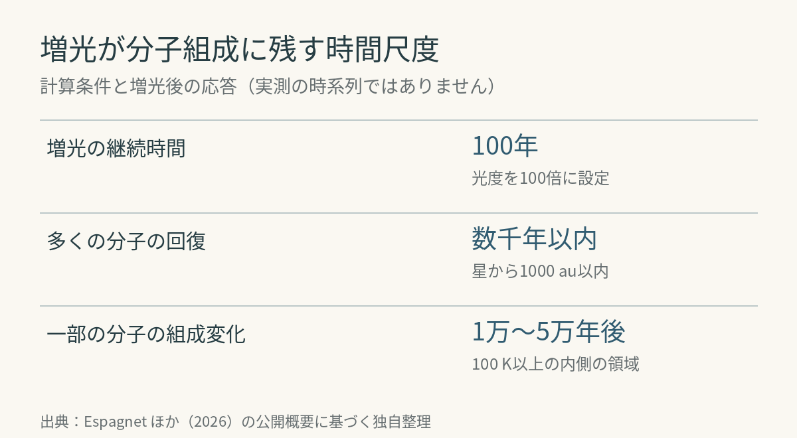

塵から分子が離れる温度
低温の原始星周囲では、気体中の分子が塵の表面に付着し、氷の層を作ります。星に近づいて温度が高くなると、分子は塵から気体へ戻ります。分子ごとにこの変化が起こる温度が異なり、その境界に相当する領域をスノーラインと呼びます。星が急に明るくなると、加熱される範囲が広がるため、スノーラインは星から遠ざかります。
今回の研究では、ガスが星に向かって落ち込む運動と、気体・塵の表面・氷の内部で進む化学反応を組み合わせた計算を行っています。原始星の光度が100年間にわたって通常の100倍になる場合を想定し、星から10〜1万天文単位の領域における83種類の分子の量を追跡しました。1天文単位は地球と太陽の平均距離に相当します。
増光の記憶を運ぶガス
計算では、分子によってはスノーラインが元の距離の10倍ほどまで移動しました。増光が終わると塵が冷え、分子は再び塵に付着します。星から1000天文単位以内では、多くの分子の量が数千年以内に元の状態へ戻りました。
興味深いのは、増光の影響を受けた物質が、その後も星へ向かって移動し続けることです。硫化カルボニル（OCS）や二酸化硫黄（SO₂）、シアノアセチレン（HC₃N）など、8種類の分子について、増光から1万〜5万年後にも100 K以上の内側の領域で組成の違いが現れると著者らは報告しています。


図を原寸で拡大する
この結果は、現在の温度だけで分子の組成を説明できない場合があることを示しています。逆に、多くの複雑な有機分子は、今回の計算条件では増光の有無によって暖かい内側の存在量が大きく変わらないと予測されました。過去の増光を分子から推定するには、どの分子を、星からどのくらい離れた位置で観測するかが重要になりそうです。